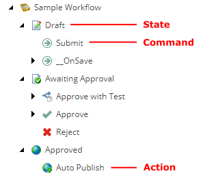
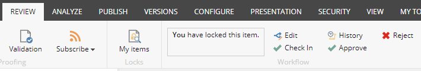
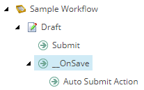

Defining workflows
Overview of how a workflow progresses through its states using actions and commands. Also covers the Initial State field, the Final checkbox and the __OnSave command.
Workflows, states, actions, and commands are all definition items stored in the content tree under /sitecore/System/Workflows. Workflows contain states, and states contain actions and commands. Commands can also contain actions. Together the definition items define the steps a content item must pass through before it becomes publishable.
|  |
Workflows
Workflows contain the Initial State field that defines the state a new content item is assigned when it becomes part of the workflow.
Workflows are based on the /sitecore/Templates/System/Workflow/Workflow template.
States
States are the main building blocks of workflows and contain the Final checkbox. If the Final checkbox is selected, any content items in this state are publishable. When a user clicks Edit to lock a content item that is in the final state, Sitecore automatically creates a new version of the content item, checks out this version, and places it in the initial workflow state.
Content items do not necessarily need to flow through all the workflow's states. Actions and commands can send content items directly to any state.
States are based on the /sitecore/Templates/System/Workflow/State template.
Actions
Actions can be associated with either states or commands and represent a method that Sitecore executes when the action is raised. An action acting as a subitem to a state is performed when the content item enters the state. An action acting as a subitem to a command is performed when the user executes the command.
Actions are based on the /sitecore/Templates/System/Workflow/Action template.
Commands
Commands let users move a content item from one state to another. The Content Editor shows commands in the Content Editor on the Review tab, in the Workflow group, when the content item is in the corresponding state and the user has access to the commands. The same commands are also shown in the Workbox.
|  |
Commands are based on the /sitecore/templates/System/Workflow/Command template containing the following fields:
Field | Value |
|---|---|
Next state | The state that the content item moves to when the action is executed. |
Suppress Comment | Defines whether the system prompts the user to enter a comment when it executes a command. If the checkbox is cleared, users are prompted. If the checkbox is selected, users are not prompted. |
The __OnSave command
The __OnSave command is a placeholder for actions that take place when a user saves changes to a content item in this state. The __OnSave command's functionality is defined in the saveUI pipeline in the web.config file.
In the Sample Workflow, the __OnSave command triggers the Auto Submit Action. When users who are members of the Sitecore Minimal Page Editor role save an item, the Auto Submit Action moves the content item to another state. This is done automatically because members of the Sitecore Minimal Page Editor role do not have access to the workflow related commands in the Page Editor.
|  |